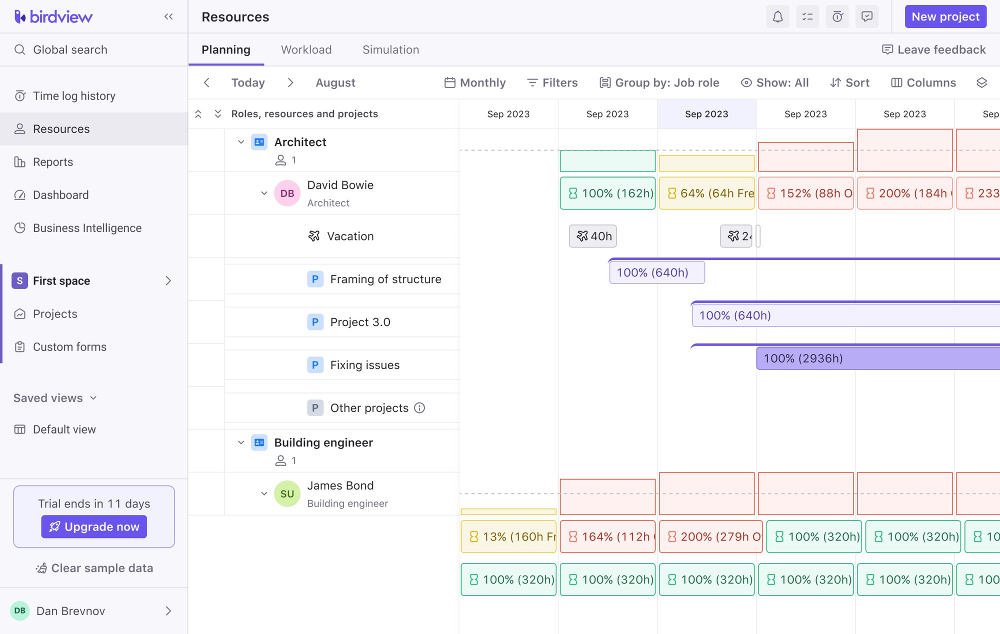
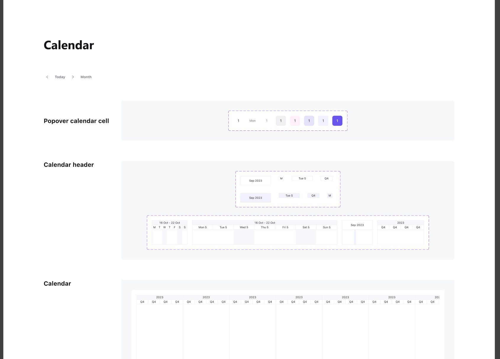

Birdview is a platform where organisations plan, manage and forecast projects, resources and finances in one place.
Birdview — платформа, где компании планируют, ведут и прогнозируют проекты, ресурсы и финансы в одном месте.
I designed the resource-planning module: the part that distributes people across projects and keeps that distribution visible.
Я проектировала модуль планирования ресурсов: ту часть, которая распределяет людей по проектам и держит это распределение прозрачным.
Make the new module a visible advantage in sales conversations and deepen engagement among existing clients. In design terms: show the workload of an entire company on one screen and keep it readable — dozens of people, projects and months at once, without the user losing the thread or needing training.
Сделать модуль заметным преимуществом в продажах и усилить вовлечённость текущих клиентов. На языке дизайна: показать загрузку всей компании на одном экране и сохранить читаемость — десятки людей, проектов и месяцев разом, так чтобы пользователь не терял нить и не нуждался в обучении.
Describe here what the work looked like before: where the load was tracked, what broke, and what it cost the team. Without this the numbers at the end have nothing to be measured against.
Здесь описать, как работа выглядела раньше: где считали загрузку, что ломалось и чего это стоило команде. Без этого цифрам в конце не от чего отталкиваться.
Four stages, from studying how managers actually plan to the rollout through a feature lab.
Четыре этапа — от изучения того, как менеджеры планируют на самом деле, до выкатки через feature lab.
Audience and their needs, competitors and market trends.
Аудитория и её потребности, конкуренты и тренды рынка.
Concept for how the feature integrates, worked out with product and engineering.
Концепция встраивания фичи, проработанная с продуктом и разработкой.
Layouts in the product style, assembled into a clickable prototype.
Макеты в стиле продукта, собранные в кликабельный прототип.
Feedback from users, corrections to the design, then the rollout.
Обратная связь от пользователей, правки в дизайне, затем выкатка.
Normal, excessive and idle load are separated by colour, so the state of a whole company is read before a single number is. Hours stay on the same cell for anyone who needs the precise value.
Нормальная, избыточная и недостаточная загрузка разведены цветом — состояние всей компании считывается раньше, чем первая цифра. Часы остаются в той же ячейке для тех, кому нужно точное значение.
When two projects claim the same person, the manager compares the claims and redistributes hours without leaving the planning screen — no separate approval flow to switch into.
Когда два проекта претендуют на одного человека, менеджер сравнивает заявки и перераспределяет часы, не уходя с экрана планирования — без отдельного согласовательного флоу.
Candidates are matched automatically by role and skills, with manual choice kept. The manager opens a role and immediately sees who fits, instead of searching people one by one.
Кандидаты подбираются автоматически по ролям и навыкам, ручной выбор остаётся. Менеджер открывает роль и сразу видит подходящих, а не ищет людей по одному.
Two projects ask for the same specialist. The overload is visible on the timeline, the claims sit side by side, and hours are redistributed in place.
Два проекта претендуют на одного специалиста. Перегруз виден на таймлайне, заявки стоят рядом, часы перераспределяются на месте.
From the overall picture down to one person: what they are busy with, how much room is left, and how a booking changes the load across the other projects.
От общей картины к конкретному человеку: чем занят, сколько места осталось и как бронирование меняет загрузку на других проектах.
The module was assembled from components rather than one-off screens: the calendar, load cells, popovers, headers and all their states, documented so engineering could build screens without coming back with questions.
Модуль собран из компонентов, а не из отдельных экранов: календарь, ячейки загрузки, поповеры, шапки и все их состояния — задокументированы, чтобы разработка собирала экраны без дополнительных вопросов.

The module turned from a planned feature into a sales argument: it is shown in demos, every new client starts with it, and the component documentation stayed in the design system — later screens were assembled from the same parts.
Модуль превратился из запланированной функции в аргумент для продаж: его показывают на демо, с него начинает каждый новый клиент, а документация компонентов осталась в дизайн-системе — следующие экраны собирали уже из этих же частей.